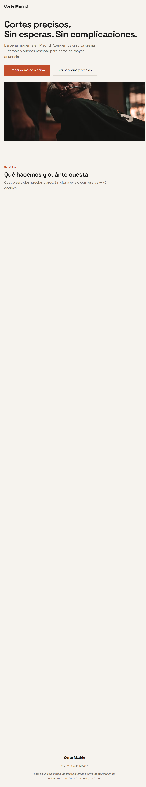

Webs profesionales para
negocios locales en Madrid.
Diseño y desarrollo webs claras, rápidas y preparadas para móvil. Para que tus clientes te encuentren, entiendan lo que ofreces y contacten contigo.
Servicios
Qué puedo hacer por tu negocio
Tres servicios concretos adaptados a pequeños negocios que necesitan una presencia online profesional.
Web básica
Una web de una página con toda la información esencial de tu negocio: qué haces, precios, horarios, ubicación y cómo contactarte. Optimizada para móvil y lista para publicar.
Web multilingüe
Tu web en español, inglés y otros idiomas que necesites. Ideal si tu negocio atiende a turistas o a una clientela internacional en Madrid.
Puesta a punto digital
Revisión y mejora de tu presencia online actual: perfil de Google Business, información básica en buscadores y conexión con tus redes sociales existentes.
Trabajo
Proyecto destacado
Un proyecto concepto que muestra cómo trabajo y qué puedo construir.

Proyecto conceptoCorte Madrid
Web multilingüe · Barbería ficticia
Problema
Muchos negocios locales en Madrid no tienen web, o tienen una que no funciona bien en móvil, no muestra precios claros y no transmite confianza.
Qué construí
Una web completa con servicios, precios, galería, información de ubicación y horarios, y un prototipo interactivo que simula cómo funcionaría un sistema de reservas.
Qué demuestra
Diseño responsive, navegación en tres idiomas (ES/EN/ZH), accesibilidad, rendimiento y atención al detalle en cada elemento.
Proceso
Cómo trabajo
Cuatro pasos, sin complicaciones.
01
Entender
Hablamos de tu negocio: qué haces, quiénes son tus clientes y qué necesitas que tu web comunique.
02
Construir
Diseño y desarrollo la web. Te muestro avances para que puedas dar feedback en cada paso.
03
Refinar
Ajustamos textos, imágenes y detalles hasta que todo esté exactamente como lo necesitas.
04
Lanzar
Publicamos la web y te explico cómo funciona todo para que puedas mantenerla sin depender de nadie.
Sobre mí
Quién hay detrás
Soy Yuqi, fundador de QiLin Studio.
Creo webs claras y profesionales para pequeños negocios en Madrid. Mi enfoque es directo: entender lo que necesita tu negocio, construirlo y dejarlo listo para usar.
Trabajo solo, lo que significa que hablas directamente conmigo en todo momento. Sin intermediarios, sin procesos complicados. Te cuento lo que puedo hacer, lo hago, y lo entrego.
Si tu negocio necesita una web que funcione bien, se vea profesional y sea fácil de usar para tus clientes — puedo ayudarte.
Trato directo
Sin intermediarios
Diseño con propósito
Cada decisión tiene una razón
Multilingüe
ES · EN · ZH
Móvil primero
Tus clientes usan el teléfono
Contacto
¿Necesitas una web para tu negocio?
Escríbeme y cuéntame qué necesitas. Sin compromiso.
qilinworkshop@gmail.com